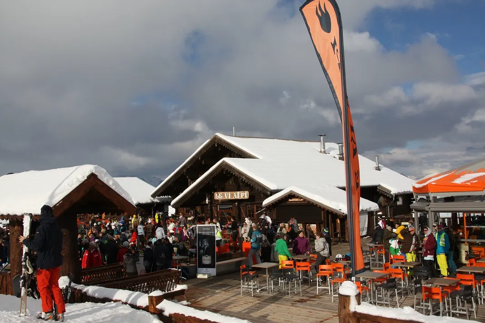
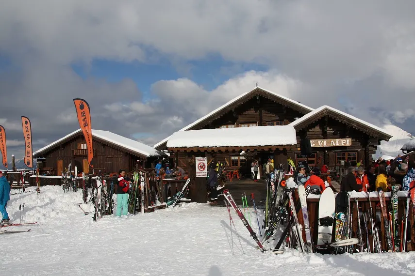
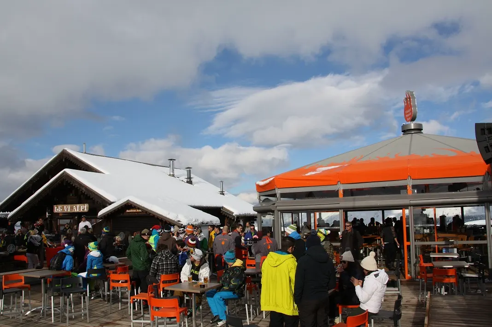
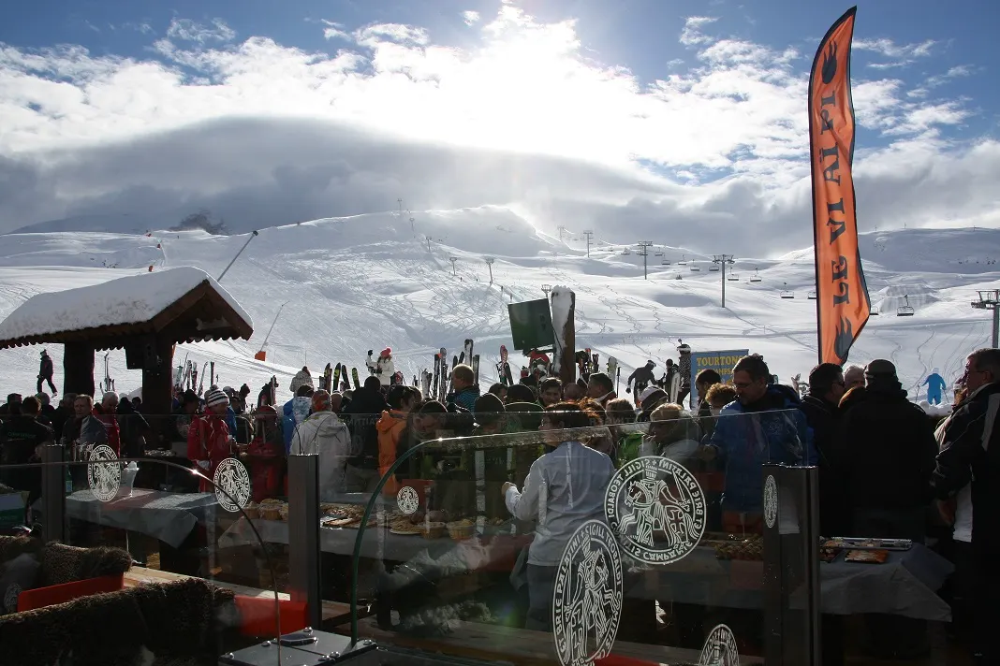

Self, salle cosy
& vue montagne
Une grande salle avec self, un espace vitré plus intime et une cheminée centrale pour déjeuner au chaud.
Superdévoluy · Festoure
Restaurant d’altitude, grande terrasse, cheminée centrale et bar musical au cœur du domaine.
Un chalet posé sur les pistes. Le feu crépite, le soleil traverse les baies vitrées et, à midi, la musique monte avec l’altitude.

Music bar
DJ résidentSUPERDÉVOLUY — HAUTES-ALPES
Une grande salle avec self, un espace vitré plus intime et une cheminée centrale pour déjeuner au chaud.
Bar musical, DJ et carré VIP : l’adresse bascule doucement du déjeuner au dancefloor.

03 / SOIRMontée et descente en chenillette, uniquement sur réservation.

Un refuge de jour.
Une scène à midi.
Une aventure le soir.

Préparer la montée
Ouvert 7j/7
09:00 — 17:00
Selon ouverture des remontées
Horaires issus de la fiche officielle, susceptibles d’évoluer. Vérifiez avant votre venue.